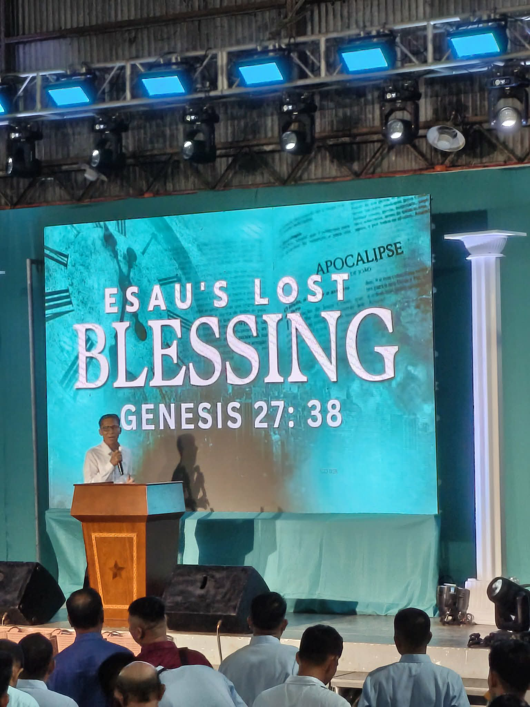
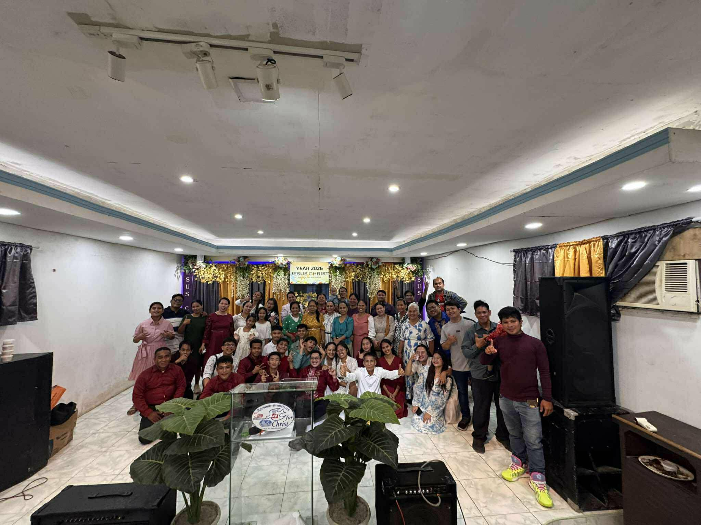

My favorite place in the world is the church, where the sacred space becomes even more meaningful as I gather to worship the Lord alongside the people I hold dearest. Sharing this spiritual journey with my family creates powerful bonds, as we come together to strengthen our faith and support one another in living out our beliefs. What makes it truly special is having my best friend and close friends by my side too – worshipping as a group of loved ones fills the space with joy, warmth, and a profound sense of unity. Whether we’re singing hymns together, listening to teachings, or offering prayers as a community, these moments remind me that faith is not just a personal journey but one that grows richer when shared with those we care about most.
Explanation of the Contact.html Web page.
A Tiktok Vidoe of a POV. You're a IT student